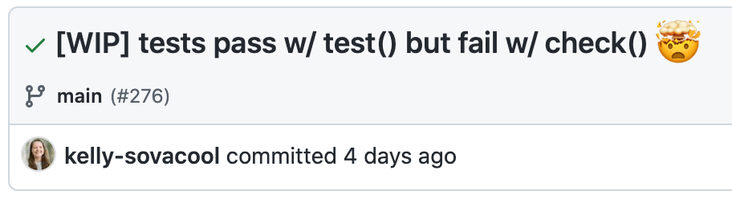

And that can cause frustrating test failures in devtools::check()!
Software Development
R
R Packages
Published
August 26, 2021
Unit tests for a package I help maintain were passing when I ran them with devtools::test(), but failing when I ran them with devtools::check().

Eventually I found this blog post which linked to a StackOverflow post that had this same problem, and in their case it was caused by the base sort() function. It dawned on me that I recently started using sort() in the branch I was working on!
When sorting character vectors, the sort order depends on the user’s locale, which is set by the environment variable LC_COLLATE. devtools::check() and devtools::test() were using different values for that environment variable, thus causing different output orders for some of the unit tests.
[1] "a" "A" "b" "B" "c" "C" "d" "D" "e" "E" "f" "F" "g" "G" "h" "H" "i" "I" "j"
[20] "J" "k" "K" "l" "L" "m" "M" "n" "N" "o" "O" "p" "P" "q" "Q" "r" "R" "s" "S"
[39] "t" "T" "u" "U" "v" "V" "w" "W" "x" "X" "y" "Y" "z" "Z"
Sys.setlocale("LC_COLLATE", "C")
[1] "C"
sorted_c <-sort(char_vect)sorted_c
[1] "A" "B" "C" "D" "E" "F" "G" "H" "I" "J" "K" "L" "M" "N" "O" "P" "Q" "R" "S"
[20] "T" "U" "V" "W" "X" "Y" "Z" "a" "b" "c" "d" "e" "f" "g" "h" "i" "j" "k" "l"
[39] "m" "n" "o" "p" "q" "r" "s" "t" "u" "v" "w" "x" "y" "z"
all(sorted_eng == sorted_c)
[1] FALSE
Solutions
1. sort(method="radix")
Use base sort() with method = 'radix', the only method where the sort order does not depend on the locale. For more details, read the sort() docs by running ?sort in an R console.
[1] "A" "B" "C" "D" "E" "F" "G" "H" "I" "J" "K" "L" "M" "N" "O" "P" "Q" "R" "S"
[20] "T" "U" "V" "W" "X" "Y" "Z" "a" "b" "c" "d" "e" "f" "g" "h" "i" "j" "k" "l"
[39] "m" "n" "o" "p" "q" "r" "s" "t" "u" "v" "w" "x" "y" "z"
all(sorted_eng_radix == sorted_c_radix)
[1] TRUE
2. stringr::str_sort()
Use str_sort() from the stringr package. It has a locale parameter that defaults to "eng", so the sort order will be stable by default, but you can override it if you need to.
stringr::str_sort(char_vect)
[1] "a" "A" "b" "B" "c" "C" "d" "D" "e" "E" "f" "F" "g" "G" "h" "H" "i" "I" "j"
[20] "J" "k" "K" "l" "L" "m" "M" "n" "N" "o" "O" "p" "P" "q" "Q" "r" "R" "s" "S"
[39] "t" "T" "u" "U" "v" "V" "w" "W" "x" "X" "y" "Y" "z" "Z"
stringr::str_sort(char_vect, locale ='haw')
[1] "a" "A" "e" "E" "i" "I" "o" "O" "u" "U" "b" "B" "c" "C" "d" "D" "f" "F" "g"
[20] "G" "h" "H" "j" "J" "k" "K" "l" "L" "m" "M" "n" "N" "p" "P" "q" "Q" "r" "R"
[39] "s" "S" "t" "T" "v" "V" "w" "W" "x" "X" "y" "Y" "z" "Z"
Wrap-up
Our package doesn’t use any other functions from stringr, so I went with option 1 to avoid adding a new dependency. I wrote a helper function called radix_sort() that simply calls base sort() with radix, and a test case to make sure it actually produces a stable sort order when the default does not.